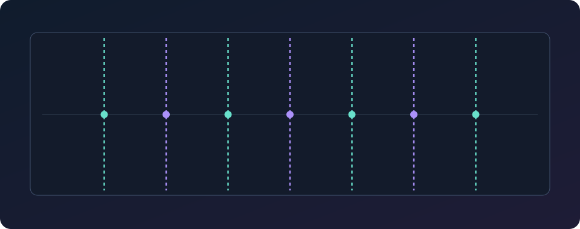

Sample chopping is often presented as a hunt for individual hits, but that is not the approach I use in ZPUNK. I prefer to start with an even musical phrase, align it to the track and use warping so the whole passage works at the intended tempo. From there, I divide it into regular sections and experiment with the order.
This keeps the original timing and musical flow at the centre of the process. Instead of cutting around gaps, or treating every transient as a separate one-shot, the chops become pieces of a phrase that already makes rhythmic sense. Here is a practical way to work through it.
Choose a phrase you can hear looping
For this approach, begin with an actual musical phrase, not a collection of isolated hits. A two-bar break, a chord progression, a bass phrase or a short vocal passage already has movement worth working with. The goal is to reshape that movement without losing the sense of where the phrase begins and ends.
Listen through the whole selection first. Does it have a clear pulse? Is there a natural return to the beginning? A little character in the timing is welcome; a phrase that has no recognizable musical shape can be much harder to work into a loop.
Establish the phrase length
Before making any chops, identify how many beats or bars the phrase represents. For example, if a sample is a two-bar phrase, treat those two bars as one musical unit. Get its start and finish aligned so it loops at the intended point, rather than choosing slice boundaries wherever a transient happens to appear.
If a recording begins with a little silence before the first hit, account for that when setting the start. Otherwise the phrase can feel late even when the rest of the editing looks correct. Accurate phrasing is the foundation for everything that follows.
Use warping to bring the phrase into time
Once you know the phrase length, bring it into the tempo of your project. Warping helps the whole musical phrase fit the intended number of bars while preserving its basic shape. In ZPUNK, this makes much more sense as a starting point than placing a series of arbitrary cuts and hoping they line up afterward.
Listen to the loop as a continuous phrase after warping. Check that its first beat lands where you expect and that the ending returns naturally to the beginning. Heavy stretching can introduce artifacts, so use only as much processing as the source needs and compare by ear.
Divide the phrase into even chops
Now the chopping becomes predictable: divide the aligned phrase into equal musical sections. Think in quarters, halves or whole-bar portions depending on the rhythm you want to build. Each piece then has a place in the phrase, rather than being defined solely by the loudest sound in the waveform.
For example, eight evenly sized slices across a two-bar phrase give you eight quarter-bar pieces. That makes it easier to understand the original flow, repeat an interesting part or change the order while keeping the structure coherent.

Rearrange the pieces without losing the flow
With an even set of chops, you can start experimenting. Repeat the first part of a phrase, swap two sections, or use a later section as a variation. Rather than building around silence between isolated hits, you are reworking the motion of an existing phrase.
Pay attention to the joins. A slice may contain the tail of one chord and the start of another, so not every reordering will sound equally natural. Sometimes the best result is a subtle change to an otherwise continuous pattern.
Check pitch and tone in the new context
Once the phrase works rhythmically, listen to how its musical notes sit with your bass and synth parts. Pitching a sample can help it belong to the track, especially when you are using chords or a melodic loop. But do not make changes just because a display suggests a particular key; the groove and the sound still come first.
After a pitch change, listen again to the transitions between evenly divided slices. If the warp or pitch treatment changes the character too much, try a lighter adjustment or a different starting phrase.
Build outward from the loop
Put the chopped phrase alongside a simple drum pattern and bassline. Before adding more layers, let the loop repeat and listen to whether it holds together. A good phrase should feel musical over several passes, not just on the first listen.
From there, try making a second variation of the same phrase for a different section. The original source gives you a shared musical identity, while the new ordering gives the arrangement movement.

Make chops on the go with ZPUNK.
ZPUNK includes a sampler with up to 16 chops, tempo and pitch tools, sequencing, and arrangement. Its compact workflow makes it possible to take an aligned phrase, work with its slices and turn it into a beat on your phone.
Final thoughts
Chopping does not have to mean isolating every hit or leaving gaps between fragments. For the way I make electronic music, the most useful starting point is a phrase with clear musical timing. Warp it to fit, divide it evenly, and then see what new rhythm emerges when you rearrange the pieces.
The result can feel fresh without losing the character and movement that made the original phrase interesting in the first place.
← Back to the blog